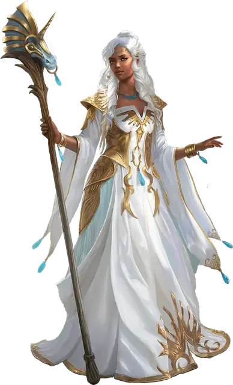

Алустриэль Сильверхенд
Alustriel Silverhand
Средний Гуманоид (Человек, Волшебник), хаотично-добрый, именной НИП

Класс Доспеха 15 (18 с доспехами мага [mage armor])
Хиты 272 (32к8 + 128)
Скорость 30 футов
| мод | спас | ||
|---|---|---|---|
| СИЛ | 12 | +1 | +1 |
| ЛОВ | 20 | +5 | +5 |
| ТЕЛ | 18 | +4 | +11 |
| мод | спас | ||
|---|---|---|---|
| ИНТ | 24 | +7 | +14 |
| МДР | 23 | +6 | +13 |
| ХАР | 22 | +6 | +6 |
Навыки История +14, Магия +14, Проницательность +13, Религия +14
Сопротивление урону излучение
Иммунитет к урону яд
Иммунитет к состояниям истощение, отравление, очарование
Чувства пассивное Восприятие 16
Языки Общий, Драконий, Эльфийский
Опасность 21 (33000 опыта)
Бонус мастерства +7
Особенности
Слух избранной. Когда существо, находящееся на том же плане существования, что и Алустриэль, произносит ее имя, Алустриэль слышит свое имя и следующие девять слов, которые произносит говорящий.
Легендарное сопротивление (3/день). Если Алустриэль проваливает спасбросок, она может вместо этого сделать спасбросок успешным.
Особое снаряжение. Алустриэль использует волшебный посох, известный как посох Сильверимуна [staff of Silverymoon]. В руках кого угодно, кроме Алустриэль, посох Сильверимуна становится посох силы [staff of power].
Действия
Мультиатака. Алустриэль совершает три атаки посохом Сильверимуна или две атаки Праведным лучом.
Посох Сильверимуна. Рукопашная атака оружием: +12 к попаданию, досягаемость 5 футов, одна цель. Попадание: 14 (2к8 + 5) дробящего урона плюс 38 (7к10) урона излучением.
Праведный луч. Дальнобойная атака заклинанием: +14 к попаданию, дистанция 120 футов, одна цель. Попадание: 65 (9к12 + 7) урона силовым полем, и если цель является существом, то она должна совершить спасбросок Харизмы Сл 22. При провале цель становится недееспособной до начала следующего хода Алустриэль. При успехе скорость цели снижается на 10 футов до начала следующего хода Алустриэль.
Серебряное зарево (требуется Серебряное пламя). Алустриэль создает 60-футовый конус серебряного огня. Все существа в этой области должны совершить спасбросок Ловкости Сл 22, получая 77 (14к10) урона излучением при провале или половину этого урона при успехе. В дополнение к этому, Алустриэль или одно существо по её выбору, в пределах 60-ти футов от неё, восстанавливает 10 (3к6) хитов.
Использование заклинаний. Алустриэль накладывает одно из следующих заклинаний, используя Интеллект в качестве базовой характеристики (Сл спасброска от заклинаний 22, +14 к попаданию атаками заклинаниями):
• Неограниченно: пляшущие огоньки [dancing lights], обнаружение магии [detect magic], доспехи мага [mage armor] (только на себя), волшебная рука [mage hand]
• 2/день каждое: обнаружение мыслей [detect thoughts], рассеивание магии [dispel magic], языки [tongues]
• 1/день каждое: телепатия [telepathy], телепортация [teleport], остановка времени [time stop]
Бонусные действия
Серебряное пламя (2/день). Ослепительно-серебряное безвредное пламя окутывает Алустриэль, делая её сильнее. Серебряное пламя длится 1 час, либо до тех пор, пока Алустриэль не станет недееспособна или не погасит пламя бонусным действием. Пока Алустриэль окутана серебряным пламенем, она получает истинное зрение в пределах 30 футов и возможность использовать действие Серебряное зарево. В дополнение к этому Алустриэль получает невосприимчивость к магии, которая способна определить её мировоззрение, вид существа, прочесть мысли или правдивость слов.
Реакции
Сияющие контрзаклинание. Алустриэль прерывает существо, накладывающее заклинание, которое она может видеть. Если у заклинания 5-й уровень или ниже, оно проваливается и не имеет никакого эффекта. Если у заклинания 6-й уровень или выше, то Алустриэль совершает проверку Интеллекта (Сл 10 + уровень заклинания). При успехе заклинание проваливается и не имеет никакого эффекта. Независимо от уровня заклинания, заклинатель получает 11 (2к10) урона излучением, если заклинание проваливается.
Описание
Леди Алустриэль Сильверхенд, которую называют Сияющей леди, на протяжении веков была влиятельной волшебницей и сторонницей добра во всем Ториле. Алустриэль — одна из Семи Сестер, бессмертных дочерей Мистры, богини плетения. Божественная энергия, которую она передала своей дочери, наделяет Алустриль невероятной властью над арканной магией.
Алустриэль — это человеческая женщина с серебристыми волосами, которая выглядит очень молодо, поэтому в её облике нет ни намека на сверхъестественно долгую жизнь. Обычно она облачена в длинные одеяния и использует посох, украшенный головой единорога — посох Сильверимуна.
Личность
Главными приоритетами Алустриэль являются распространение добра, поощрение добродетели и пестование сострадания во всей мультивселенной. Она создает союзы и быстро вмешивается в чужие планы, когда чувствует угрозу силам добра. Она совершила множество путешествий и создала убежища на различных планах — например, свое святилище в городе Сигил. Алустриэль не стремится к личной славе или богатству: ее способ влияния на космос незаметный, но эффективный.